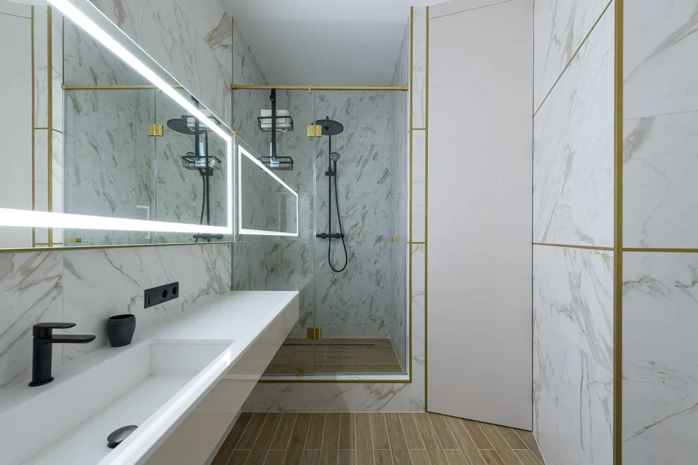

Lexington bathroom remodeling contractors
Bathroom Remodeling Lexington MA, planned and built by DeFaria
Bathroom Remodeling Lexington MA projects start with a written plan and an owner-led walkthrough. Lexington bathroom remodeling from DeFaria Construction covers the rough-in, waterproofing, tile and fixtures, planned before demolition so the finished bathroom holds up to daily use and Massachusetts winters.
Our work
A real DeFaria bathroom transformation
Watch a bathroom we remodeled, from the first step to the final detail.
Get a Free Estimate
Local search focus
Lexington bathroom remodeling is about what happens behind the tile.
Across Lexington Center, East Lexington, North Lexington, Five Fields and Meriam Hill, Lexington combines historic Colonials near Lexington Center, mid-century modern neighborhoods such as Five Fields, and many 20th-century Capes, Colonials and split-levels. A lasting Lexington bathroom remodel depends on clean rough-in, proper waterproofing and ventilation before anyone sees a single tile.
This page is built for Lexington homeowners comparing bathroom remodeling contractors near them. It connects the Lexington search to project photos, neighborhoods, the full bathroom scope and a direct estimate path.
- Clear estimate conversations before the project starts.
- Direct communication with the homeowner from walkthrough to final walkthrough.
- Local coverage across Lexington and the wider Middlesex County area.
The scope
What a full Lexington bathroom remodel covers

In Lexington, historic homes near the center and mid-century modern houses with low rooflines often add design and review constraints.
- Clean rough-in for plumbing and any layout change, checked for waterproofing before tile.
- Tile, vanity, fixtures and lighting selected and coordinated for a durable, water-tolerant finish.
- Ventilation, moisture control and finish carpentry handled so the room holds up over time.
Lexington permits and inspections run through the Town of Lexington Building Department, and DeFaria keeps that step organized so scope and timeline stay realistic.
Cost
How much does a bathroom remodel cost in Lexington?

A bathroom remodel in Lexington usually runs from about $12,000 to $25,000 for a standard full remodel, and $25,000 to $45,000 or more for a large or high-end bathroom. The final number depends on the scope, not a flat price.
- The size of the room and any change to the layout.
- The grade of tile, vanity, fixtures and lighting.
- The age of the home and what is hidden in the walls and floor.
- The amount of waterproofing, ventilation and carpentry needed.
In Lexington, historic homes near the center and mid-century modern houses with low rooflines often add design and review constraints, and that can show up in the plumbing, prep and rot-repair line of the estimate.
DeFaria gives a fixed, itemized Lexington estimate at the walkthrough, so the price matches the actual scope instead of a guess.
Process
How a Lexington bathroom remodel runs, step by step

Every Lexington bathroom remodel runs on a clear sequence, so nothing catches you off guard.
- Walkthrough and a clear, itemized estimate.
- Design and material selection: tile, vanity, fixtures and lighting.
- Protection of the home and demolition of the existing bathroom.
- Plumbing and electrical rough-in for the new layout.
- Waterproofing and moisture control behind the tile.
- Tile, vanity, fixtures and finish carpentry.
- Paint, final details and a walkthrough before you sign off.
DeFaria coordinates the Lexington permit with the Town of Lexington Building Department before the rough-in, and keeps you updated at each step.
Most Lexington bathroom remodels take about 2 to 4 weeks once materials are on site, depending on the scope.
Materials
Materials and finishes that hold up in Lexington bathrooms

Humidity, hard water and cold Middlesex County winters mean the bathroom finish is picked to last, not just to look good.
- A proper waterproofing membrane behind the tile, not just backer board.
- Porcelain or quality ceramic tile set with the right grout and sealant.
- Ventilation sized to actually clear moisture and prevent mold.
- Moisture-tolerant vanities, trim and paint for a room that stays humid.
From Lexington Center to North Lexington, historic homes near the center and mid-century modern houses with low rooflines often add design and review constraints, which is exactly why the finish is specified for the home rather than a catalog.
When to remodel
Signs it is time to remodel your Lexington bathroom

A few clear signs a Lexington bathroom is ready for a remodel:
- Leaks, soft spots underfoot or stains creeping up the wall.
- Persistent mold or a fan that never clears the steam.
- Cracked tile, worn grout or fixtures past their life.
- A cramped or awkward layout you work around every day.
- A sale on the horizon and a bathroom holding back the offer.
Older homes around Lexington Center and East Lexington in Lexington show these first.
Layout and rough-in
Planning the layout and rough-in for your Lexington bathroom
The rough-in is where a Lexington bathroom project is won or lost. We start by measuring the existing space, then decide whether the current layout can stay or whether fixtures should move for better clearances and flow.
When plumbing has to be rerouted, we open the floor and walls, reset the drain slope, and verify venting meets code. Because historic homes near the center and mid-century modern houses with low rooflines often add design and review constraints, we inspect the framing and subfloor for rot or sagging while everything is exposed in your Middlesex County house.
In Lexington, homeowners near Lexington Center, East Lexington and North Lexington get a bathroom remodeling scoped for the neighborhood and the Middlesex County housing it sits in, permitted through Town of Lexington Building Department.
We match the bathroom remodeling to the local homes. Lexington combines historic Colonials near Lexington Center, mid-century modern neighborhoods such as Five Fields, and many 20th-century Capes, Colonials and split-levels.
For Lexington homeowners in Lexington Center, East Lexington, North Lexington, Five Fields and Meriam Hill, the bathroom remodeling is scoped locally.
- Map toilet, vanity, tub and shower positions first
- Price any fixture relocation clearly at the walkthrough
- Upgrade undersized or aging Middlesex County waste lines
- Verify drain slope and venting meet current code
Waterproofing and ventilation
Waterproofing and ventilation built for Lexington winters
Massachusetts winters are hard on bathrooms, so waterproofing is not a detail we rush in Lexington. We install proper membranes and pans behind tile and under the shower floor, because moisture that gets past cheap prep is what rots framing and grows mold years later.
Ventilation matters just as much. A correctly sized, vented exhaust fan pulls humid air out through the roof or wall, not into the attic, which protects your Middlesex County home when windows stay shut for months.
From Lexington Center to East Lexington and North Lexington, every Lexington bathroom remodeling is matched to the local housing stock in Middlesex County, with Town of Lexington Building Department handling the permit side.
Here is the local picture behind the bathroom remodeling: Lexington combines historic Colonials near Lexington Center, mid-century modern neighborhoods such as Five Fields, and many 20th-century Capes, Colonials and split-levels.
- Full membrane system before any tile goes down
- Correct fan sizing for the room volume
- Ducting run completely to the exterior
- Detailing that survives months of closed windows
Tile, vanity, fixtures
Choosing tile, vanity and fixtures in Lexington
In Middlesex County we guide clients through tile, vanity and fixture selection with durability in mind, not just the showroom photo. Porcelain tile shrugs off moisture, quartz counters resist stains, and quality valves keep working long after trendy finishes fade.
Budget drives a lot of this. A standard full Lexington remodel typically lands between $12,000 and $25,000, and a large or high-end bathroom is $25,000 to $45,000 or more, so we help you spend on the pieces you touch and see every day.
From Lexington Center to East Lexington and North Lexington, every Lexington bathroom remodeling is matched to the local housing stock in Middlesex County, with Town of Lexington Building Department handling the permit side.
Local context shapes the work: Lexington combines historic Colonials near Lexington Center, mid-century modern neighborhoods such as Five Fields, and many 20th-century Capes, Colonials and split-levels. We plan the Lexington bathroom remodeling around exactly that.
- Porcelain and stone tile compared on durability
- Quartz versus laminate tops for daily wear
- Quality valves that outlast trendy finishes
- Standard remodel typically $12,000 to $25,000
Showers and accessibility
Walk-in showers, tubs and aging-in-place in Lexington

Whether you want a spa-like walk-in shower or a family tub, we build it around how you actually live in Lexington. Curbless entries, built-in benches and handheld sprayers make a bathroom easier to use today and for decades to come.
Aging-in-place features fit right into a good remodel: blocking in the walls for future grab bars, wider clearances, and slip-resistant floors. These choices protect Middlesex County homeowners who plan to stay in their home for the long run.
For homes near Lexington Center, East Lexington and North Lexington, the Lexington bathroom remodeling is planned case by case, with Middlesex County permits handled by Town of Lexington Building Department.
Local context shapes the work: Lexington combines historic Colonials near Lexington Center, mid-century modern neighborhoods such as Five Fields, and many 20th-century Capes, Colonials and split-levels. We plan the Lexington bathroom remodeling around exactly that.
- Keep a soaking tub or convert to a shower
- Low-threshold entries for easier daily access
- Wider clearances planned for your Lexington layout
- Aging-in-place built in, not retrofitted later
Working with us
Working with a local Lexington bathroom contractor

When you hire DeFaria Construction, you work directly with the owner, not a rotating crew of subs you never meet. We start with a walkthrough in Lexington, listen to what you want, and give you a fixed, itemized estimate so there are no surprises.
We are licensed and insured, carry an A+ BBB rating, and pull the right permits for the work. Lexington permits and inspections run through the Town of Lexington Building Department, and DeFaria keeps that step organized so scope and timeline stay realistic. Once materials are on site, a typical Middlesex County bathroom takes about 2 to 4 weeks to finish.
For homes near Lexington Center, East Lexington and North Lexington, the Lexington bathroom remodeling is planned case by case, with Middlesex County permits handled by Town of Lexington Building Department.
We match the bathroom remodeling to the local homes. Lexington combines historic Colonials near Lexington Center, mid-century modern neighborhoods such as Five Fields, and many 20th-century Capes, Colonials and split-levels.
- Free walkthrough and honest, line-by-line pricing
- One accountable person managing your Lexington project
- Proper permits and inspections handled for you
- Typical bathroom finished in about 2 to 4 weeks
Project photos
Bathroom Remodeling photos for Lexington homeowners
The Lexington bathroom remodeling page pairs local search intent with real project photos, so visitors see the finish level before requesting an estimate.

Areas covered
Bathroom Remodeling across Lexington neighborhoods
DeFaria Construction supports bathroom remodeling searches across Lexington and nearby Middlesex County towns, giving visitors enough local context to decide whether DeFaria is the right fit before they call.
Across Lexington Center, East Lexington and Meriam Hill, Lexington projects are matched to the neighborhood and run through the Town of Lexington Building Department.
- Lexington Center
- East Lexington
- North Lexington
- Five Fields
- Meriam Hill
Reviews
What Lexington homeowners say about DeFaria Construction
DeFaria Construction has a 5.0 rating from 15 reviews on Google. See all reviews on Google.
DeFaria Construction completed a full remodel of our master bathroom to our great satisfaction. Demolition down to the studs and subfloor was completed quickly. Plumbing changes and waterproof underlayment were quickly installed. Tiling of the floor and shower were beautifully done. Installation of…
Excellent work! I’m extremely happy with the results of my bathroom. Defaria Construction did an amazing job and was very professional, careful, and detail-oriented throughout the entire project. The workmanship and finishing touches were outstanding. You can really tell when a company takes pride…
I have work with Defaria Carpenter in my project, and they give me the best experience I never have with another contractor. Thank for the great job you guys done at my house.
Hiring guide
Questions to ask before hiring a Lexington bathroom remodeler
- Are you licensed and insured in Massachusetts, and will you show proof first?
- What is included, and what is only an allowance?
- Which waterproofing system goes behind the shower tile?
- Who pulls permits, and who is on site every day?
Quotes only compare fairly when they cover the same scope. DeFaria puts the full scope in writing before work begins.
Experience
Why this Lexington page is built for real homeowners, not just keywords.
DeFaria Construction serves homeowners and businesses throughout Middlesex County and Essex County as a local, owner-run builder. With hands-on involvement from Luiz DeFaria and A+ BBB credibility, the Lexington bathroom page is written around real scope, waterproofing and finish coordination, not a city name dropped into a template.
DeFaria Construction is a licensed and insured local contractor with an A+ BBB rating and verified customer reviews, and every Lexington project is owner-led by Luiz DeFaria from the first walkthrough to the final one.
"our Lexington bathroom was done right behind the tile, not just made to look good, and it has held up."
Lexington homeowner

What Lexington and nearby Middlesex County homeowners say: Read DeFaria Construction reviews on Google. BBB Accredited Business with an A+ rating since March 2024, verify on BBB.
The goal is to help someone searching for Lexington bathroom remodeling contractors understand the scope, the neighborhoods covered and how to start a direct conversation before requesting a free estimate.
Call (617) 893-2221 for a free estimateFAQ
Common questions about bathroom remodeling in Lexington
What bathroom remodeling work does DeFaria Construction handle in Lexington?
In Lexington DeFaria Construction handles plumbing rough-in, waterproofing, tile, vanities, fixtures, ventilation and finish carpentry for a full or partial bathroom remodel.
How much does a bathroom remodel cost in Lexington?
A Lexington bathroom remodel usually runs from about $12,000 to $25,000 for a standard full remodel, and $25,000 to $45,000 or more for a large or high-end bathroom. DeFaria gives a fixed, itemized estimate at the walkthrough so the price matches the real scope.
How long does a Lexington bathroom remodel take?
Most Lexington bathroom remodels take about 2 to 4 weeks once materials are on site, depending on the scope and whether the layout changes.
Can a small Lexington bathroom be remodeled without moving walls?
Often yes. Many Lexington bathrooms gain the most from better fixtures, tile, storage and lighting inside the existing footprint before anyone considers moving plumbing or walls.
Is DeFaria Construction licensed and insured?
Yes. DeFaria Construction is a licensed and insured contractor with an A+ BBB rating and verified reviews, and every Lexington project is owner-led by Luiz DeFaria.
Does DeFaria handle Lexington bathroom permits and inspections?
Yes. Lexington permits and inspections run through the Town of Lexington Building Department, and DeFaria keeps that step organized so scope and timeline stay realistic.